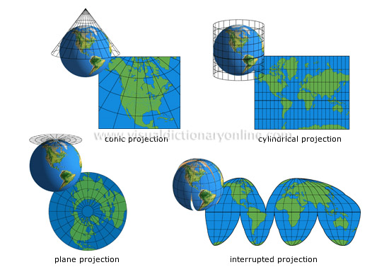

<!DOCTYPE html>
<html>
  <head>
    <title>Maps 101 - BEKK Hackathon 31.10.2014</title>
    <meta http-equiv="Content-Type" content="text/html; charset=UTF-8"/>
    <style type="text/css">
      @import url(http://fonts.googleapis.com/css?family=Yanone+Kaffeesatz);
      @import url(http://fonts.googleapis.com/css?family=Droid+Serif:400,700,400italic);
      @import url(http://fonts.googleapis.com/css?family=Ubuntu+Mono:400,700,400italic);

      body { font-family: 'Droid Serif'; }
      h1, h2, h3 {
        font-family: 'Yanone Kaffeesatz';
        font-weight: normal;
      }
      .remark-code, .remark-inline-code { font-family: 'Ubuntu Mono'; }
    </style>
  </head>
  <body>
    <textarea id="source">
#Maps 101
##Torgeir Thoresen og Rolf Erik Paulsen
###Hackathon, 31.oktober 2014

- Slides: http://bekk.github.io/fagdag-maps-101
- Repo: http://github.com/bekk/fagdag-maps-101
---
#GIS - Geografiske Informasjonssystemer
Samlebetegnelse for all systembehandling som har med geografiske (romlige) data å gjøre

###Wikipedia-definisjon av GIS
"*datamaskinbaserte systemer som brukes til å registrere, modellere, lagre, hente, manipulere, analysere og presentere geografisk refererte data*"

???

Forklare dagen:
Vi har teori og oppgaver/implementasjon om hverandre. Hovedvekt på teori i starten, og mer implementasjon på slutten.

Vi har prøvd å tilrettelegge javascript-koden slik at det skal være relativt enkelt å starte uavhengig av javascript-nivå.

Torgeir sier mer om koden etterhvert.


---
#Hovedkomponenter i GIS-stacken

<br><br>
<div align="center">

</div>

???

##Kartdata
Raster/Vektor
Lagres på disk, eller i database (evt også søkemotorer som Solr)
Snakk om leverandører; kartverket - osm - google 
##Kartserver
GeoServer, GeoWebCache, ArcGis Server, MapServer
Todo: Finn ut nøyaktig hva Google og OSM bruker
##Kartklient
Henter data fra kartserver, og viser til brukeren - enten i standalone app eller i webleser
Leaflet, OpenLayers, Google, ArcGis
---
#Oppgave 

Vi starter med et kart hvor hele stacken er på plass

Gjør følgende:

1. git clone git@github.com:bekk/fagdag-maps-101.git
2. http://nodejs.org/
3. npm install
4. npm run watch
5. Gå til localhost:3000

---

# Vi ser på koden

???

Torgeir går igjennom, og viser forskjell mellom Leaflet og OpenLayers
Viser to stk bakgrunnskart (uten marker og popup)

Torgeir forklarer oppsett av JavaScript og css m.m

---

# API

## Leaflet 0.7.6
http://leafletjs.com/reference.html

## OpenLayers 3
http://openlayers.org/en/v3.0.0/apidoc

---
#Raster-kartdata
Et *bilde* bestående av pixler, og ofte bakgrunnsbildet på et kart. 
Hver pixel kan inneholde både visuell og meta-informasjon.
###png, gif, jpg, geoTIFF, JPEG2000.

--

##Vektor-kartdata
Beskrivende tekst med koordinater og relasjonen mellom disse; f.eks punkt eller linje/polygon med relasjonen mellom disse.

Kartlag som legges "oppå" bakgrunnskartet vil ofte være vektor-data.

###Shapefile, GeoJSON, TopoJSON, KML

---
#Kartservere
Tar imot forespørsler om kartbilder, henter fra kartdata og leverer ut på ønsket format.

Kartdata leveres hovedsaklig ut fra kartserveren enten som WMS eller Tiles.

###GeoServer, GeoWebCache, ArcGis Server, MapServer

---
#Tiles (fliser)

Pregenererte bilder på gitte zoom-nivåer og tile-størrelse normalt på 256 x 256 px

Organiseres inn i rader (opp/ned) og kolonner (høyre/venstre).

Google Maps og OpenStreetMap leverer Tiled maps, og disse er i dag *de facto* standard for Tiles.

**Request-eksempel**

http://tile.openstreetmap.org/{z}/{x}/{y}

???

Nesten alle kart for offentlig bruk benytter tiles

Når et kartbilde skal vises, så trenger normalt kun 20-30 tiles hentes ned 
(250px x 250px)

Flere måter å adressere dette på, måten til Google og OSM er "de facto" standard

Torgeir viser frem nettloggen for tiles slik at vi ser /x/y/z-spørringen

---
#WMS
Kartdataene er ikke forhåndbehandlet, så kartserveren gjør all prosessering *on-the-fly*.

Brukes ofte for å vise data som er dynamiske eller små datamengder.

**Fordeler**

Større frihet mht zoom-nivå og on-the-fly valg av kartinnhold, trenger ikke forhåndshåndtere data

**Ulemper**

Krever mye prosessering av kartserver, og skalerer dårlig

???

Kan for eksempel gjøre cql-spørringer

Spørringen gjøres ved å angi en "bounding-box"

Du har også Tiled WMS hvor kartene i bakgrunn er Tiled, men requesten blir behandlet på serveren og gjort om til å spørre etter pregenererte tiles.


---

#Koordinatsystemer

##Geografisk koordinatsystem
Angir enhver posisjon på jorden med utgangspunkt i jordens sentrum vha grader; *latitude* og *longitude*.

Mest kjent er WGS84 som brukes i *alle* moderne GPS'er, og som har en nøyaktighet på ca 1 meter rundt hele kloden.
--


##Kartesisk koordinatsystem
Angir posisjoner på en todimensjonal flate med "vanlige" *x*- og *y*-koordinater.

Mest kjent er WebMercator (som brukes av Google, Bing, OSM) og UTM som brukes mye i norge.

???

I USA benyttes også NAD83 og NAD27 (North American Datum)

---
#WGS 84 - World Geodetic System 1984
Den mest utbredte standarden for geografiske systemer; består av:
 * Koordinatsystemet *WGS84*; dette er latitude og longitude som vi kjenner det fra alle moderne GPSer i dag.
 * Datumet *WGS84*; som er en matematiske beskrivelse av jordens form og overflate
<br><br>
<div align="center">

</div>

???

I USA benyttes også NAD83 og NAD27 (North American Datum).

WGS84 prøver å gi en god tilpasning for hele verden, mens NAD er mer tilpasset til USA.

---
#Men.. hva er datum
Jorden er ikke en perfekt rund sirkel, så vi lager en matematisk modell for å kunne gjøre beregninger.

Et *datum* er en slik modell, og den mest utbredte modellen (datumet) er *WGS84*.

<div align="center">

</div>
---
#Projeksjon; fra kule til ark

*Kartprojeksjon er den metode man bruker når man på et kart skal overføre Jordens eller et annet rundt himmellegemes overflatetrekk til et flatt kart.*

Problemstilling er å representere en rund jord på en flat skjerm/papir.

<div align="center">

</div>


???

Projections are what we call the mathematical equations that do the trick of turning the world into some flat shape that fits on a printout or a computer screen. 
It’s a messy task to do, this transformation - there’s no way to smoosh the world onto a screen without distorting it in some way. 
You either lose direction, or relative size, or come out with something very weird looking.

???

---
#WebMercator projeksjon
Dette er "defacto"-standard for projeksjon i webapplikasjoner. Denne brukes av Google Maps, Open Street Map, Bing Maps, Mapquest og mange andre.

**Kjært barn har mange navn...**

*Web Mercator, Google Web Mercator, Spherical Mercator, WGS 84 Web Mercator, WGS 84/Pseuco-Mercator....*

**... og mange id'er**

*EPSG:900913, EPSG:3785, EPSG:3857, EPSG:102113, EPSG:102100, EPSG:41001 og ESRI:54004*

###Korrekt i dag er: EPSG:3857
	
???

Mye enklere å beregne, men unøyaktig rundt polene

---
#EPSG
OGPs *liste* av godkjente koordinat-systemer (og datum).

###De mest brukte
**EPSG:4326**: WGS 84 (Geografisk) Lat/Lon for GPS

**EPSG:3857**: Google WebMercator  (Kartesisk) .. se også EPSG:900913

**EPSG:32633**: UTM 33 (Kartesisk) brukes mye i norge
<br><br>

Brukes i kartapplikasjoner for å angi koordinatysstem

Samme kode benyttes også for å angi *crs* (coordinate reference system) og *srs* (spatial reference system) i enkelte klienter.

???

We have reviewed the coordinate reference system used by Microsoft, Google, etc. and believe that it is technically flawed. We will not devalue the EPSG dataset by including such inappropriate geodesy and cartography.

---

# Oppgave

## Zoom til Blikkboksen i leaflet

Det er enkelt å zoome til lat long i leaflet, fordi: 
- Leflet antar automatisk at bakgrunnskart er i WebMercator (EPSG:3857)
- Leaflets API tar alle inndata (koordinater) du bruker i WGS84 (EPSG:4326)

--

## Zoom til Blikkboksen i Openlayers

OpenLayers kan være litt vanskeligere, fordi den forventer at inndataene er i samme projeksjon (koordinatsystem) som bakgrunnskartet

- Blikkboksen-koordinatene er i WGS84 (EPSG:4326)
- Bakgrunnskartet er i WebMercator (EPSG:3857)

**Hint**: metoden `ol.proj.transform()` konverterer mellom projeksjoner

---
#UTM - Projeksjon
Universal Transverse Mercator coordinate system

Deler jorden inn i 60 vertikale soner á 6 grader.

I norge er UTM (sone 32 og 33) utbredt, og brukes i stor grad av blant annet Kartverket. Gir ett eget koordinatsystem (x,y) innefor hver "rute". Dette koordinatsystemet benytter meter som enhet, så lengde og areal er "lett" å beregne.

<br><br>
<div align="center">

</div>
x 

???

Bruker WGS 84 ellipsiode 

Vil da ofte stå "WGS84 / UTM 33"

A Transverse Mercator projection results in extreme distortion in polar areas
Begrenset til 84 grader nord, og 80 grader sør. Utenfor dette brukes UPS Universal Polar Stereographic

20 vertikale soner på 8 grader hver (A - U)

Easting = x
Northing = y

---

# Oppgave

Her er et koordinat i UTM33: `[262030, 6649354]` 

Hvor er dette?

## Zoom til det i begge kart 

**Hint**: Transformasjonskoden for UTM33 er EPSG:32633

Hverken OpenLayers eller Leaflet støtter denne projeksjonen "out of the box". 
Formelen som kan brukes sammen med proj4 kan hentes på http://epsg.io

???

Torgeir viser frem hvor i koden man skal zoome

---

# Oppgave: Markører

## Vis en markør for Blikkboksen i både Leaflet og Openlayers

---

# Kartlag
Et kart bygges lag for lag...

<div align="center">

</div>

Normalt et bakgrunnskart neders, med et sett av *feature*-lag på toppen.

*feature*-lagene består av vektor-data tegnet av klienten, eller gjennomsiktig raster-kart fra kartserver.

---

# Oppgave: Geojson

## Vis geojson med fylker og kommuner i Leaflet og Openlayers

---

# Oppgave: Kumlokk

## Vis Oslos kumlokk i Leaflet og Openlayers

---

# Bonusoppgaver for begge kart:

- Vis popups
- Clustre kumlokk

Forslag til andre datakilder:

- ssb - http://data.ssb.no/api/
- vegkart - http://vegvesen.no/nvdb/api/

---
#Takk for oss :-)
<br><br>
###Si din mening
https://survs.com/survey/zh5jb1cqrp

    </textarea>
    <script src="http://gnab.github.io/remark/downloads/remark-latest.min.js" type="text/javascript">
    </script>
    <script type="text/javascript">
      var slideshow = remark.create();
    </script>
  </body>
</html>
